The Island consists of multiple climatic and geological regions.
There are five larger mountains in the north and plains in the
south. Three large Obelisks form a triangle on the Island.
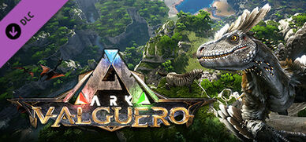
Summary
Survivors, come explore a vast and diverse 63 km2 map with a
multitude of new terrains to build on! Observe familiar ARK
creatures in a vast environment and meet Deinonychus, the newest ARK
feathered theropod found only in Valguero.
Summary
Extinction places survivors on an Element-infested, ravaged planet
filled with fantastical creatures both organic and technological.
Earth holds both the secrets of the past and the keys to its
salvation.
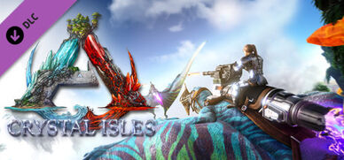
Summary
Every new creature in Crystal Isles holds a surprise, from the
explosive Tropeognathus to the glowing Crystal Wyvern. Furthermore,
Crystal Isles adds a new boss called the Crystal Wyvern Queen. The
Crystal Wyvern Queen spawns minions called the Crystal Wyvern Heir.
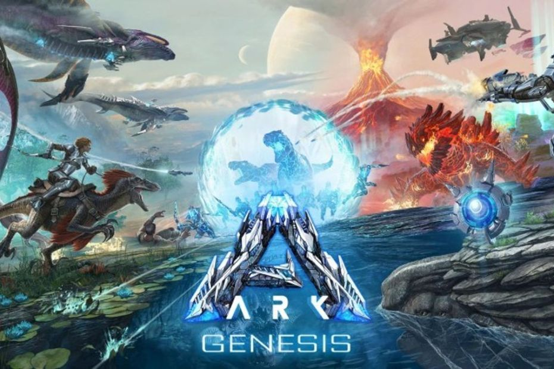
Summary
Genesis: Part 1 is a simulation across 5 distinct biomes in the form
of mini maps: Bog, Arctic, Ocean, Volcanic, and Lunar
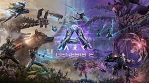
Summary
Genesis: Part 2 has survivors exploring a vast world filled with
strange new Biomes, Story Missions, and exotic Creatures.

 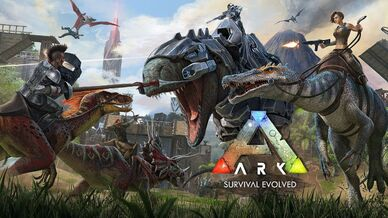
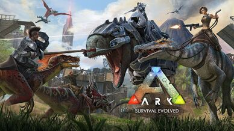
 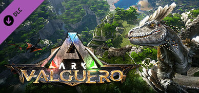
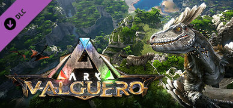


 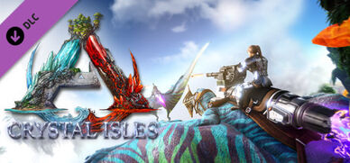
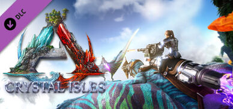
 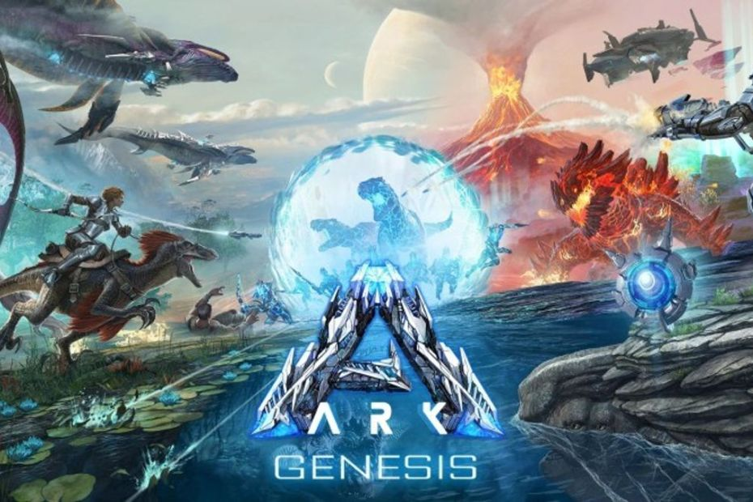
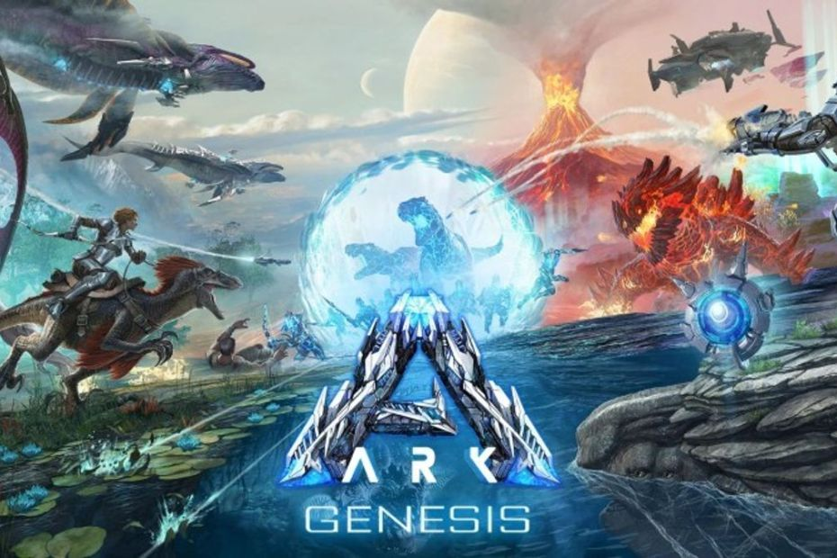
 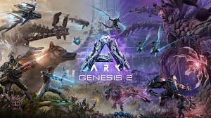
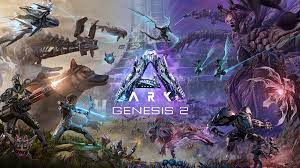